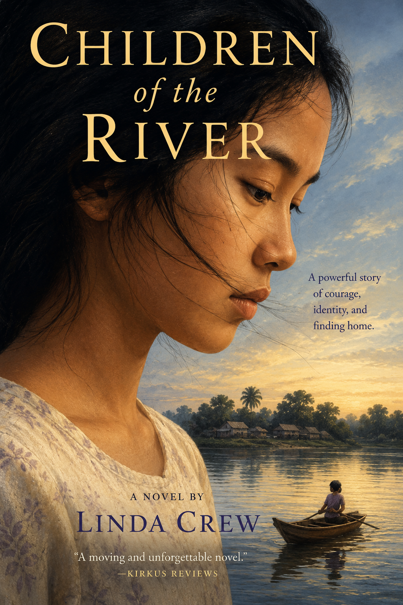
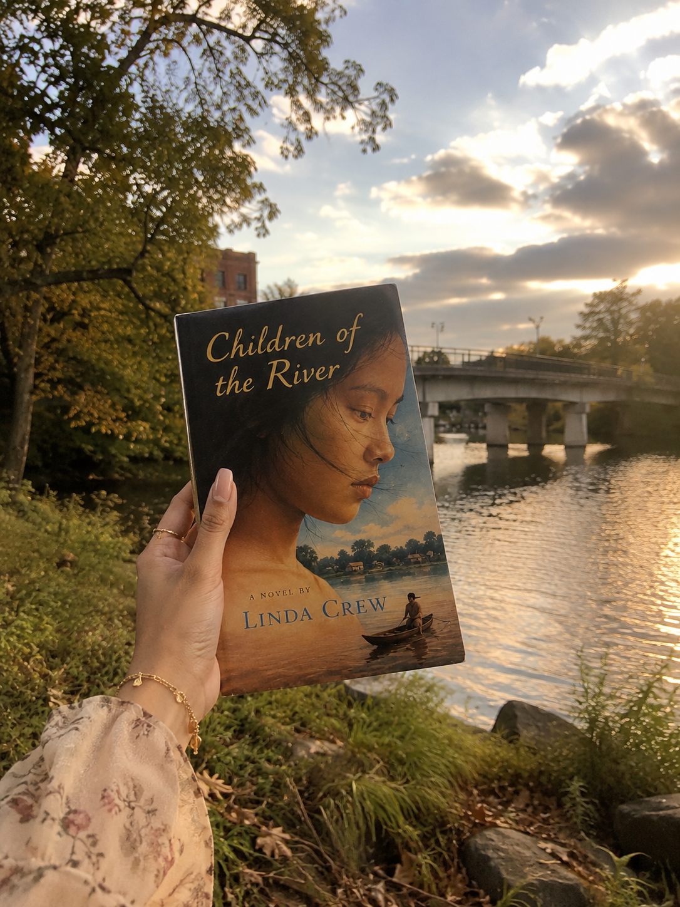

Children of the River follows Sundara, a Cambodian refugee living in Oregon four years after the Khmer Rouge took power. The narrative centers on her attempt to balance the traditions of her family with the expectations of her American environment. Sundara carries the weight of a death that occurred during her escape from Cambodia, a secret that shapes her interactions in the Willamette Valley. Her relationship with Jonathan McKinnon, an American student, serves as a catalyst for her to confront her repressed grief and the cultural friction of her resettlement. The novel explores the ways displacement alters identity and the difficulty of finding refuge in a culture that demands total assimilation.
Children of the River functions as a study of displacement and the political complexities of the refugee experience. While often categorized as young adult literature, the text engages with global violence within the Oregon landscape in a manner that demands critical reading. Linda Crew places the refugee narrative at the center of regional literature. This placement forces a confrontation with how international trauma reorganizes the present. Oregon is not a neutral refuge in this narrative. It is a space that demands assimilation and fails to comprehend the histories of those it receives.
Sundara Sovann exists in a state of liminality where the safety of the Pacific Northwest is interrupted by the ghosts of Cambodia. Her struggle involves a labor of explanation required by many who have been displaced. She must translate her identity for a public that views her as a representative of a culture rather than as an individual. This isolation is intensified by her linguistic position. Sundara observes: "Cannot talk is like a prison. Cannot make a new life" (Crew, 15). This metaphor illustrates the frustration of being unable to construct a life while the language of the host culture remains a barrier to agency. The struggle to speak is a struggle to belong.
The narrative highlights the tension between private grief and public curiosity. Sundara’s trauma remains internal until a school assignment forces it into the open. Writing a poem about the loss in Cambodia attracts the attention of Jonathan McKinnon. Jonathan is a student whose interest in Sundara is framed by her status as an outsider. It can be suggested that Jonathan is motivated by white guilt. He becomes interested in Sundara because of her history and the customs she maintains. This interest leads to friction. When Jonathan faces conflict with his father, he blames Sundara for the disruption of his family life. This dynamic reveals a trap within the host community. The refugee is often welcomed as a subject of curiosity rather than as a person with autonomous needs.
The character of Soka, Sundara’s aunt, represents the domestic heroism required for survival. Soka holds the family together by managing finances and maintaining cultural continuity in an environment that encourages erasure. Her strictness and demand for traditional adherence are defense mechanisms against the insecurity of displacement. Soka suffers from the same guilt as Sundara regarding the death of her infant during their escape. The review of the text notes that Soka's memory of incidents is "inaccurate and portrays her to be much more valiant" (Crew, 185). The resolution of the conflict between these two women occurs through a shared acknowledgment of loss. Sundara admits the depth of her repression when she tells Jonathan: "I start to cry, I think maybe I never stop" (Crew, 15). The release of this grief allows for a reintegration of the self that honors her Cambodian roots while acknowledging her Oregon reality.
The conclusion of the novel involves a prayer session to address the perceived possession of Sundara by the spirit of the dead infant. This ritual serves as a site for cultural reconnection. Through the guidance of her grandmother, Sundara utilizes the spiritual logic of her homeland to process her trauma. This act allows her to redefine herself through her own heritage instead of through the expectations of her American peers. The ritual centers the Cambodian experience in a way that bypasses the Western demand for secular assimilation. It acknowledges that the past is a living force in the present.
The river serves as a symbol of continuity and change. Rivers carry memory forward while moving through new landscapes. Sundara’s identity is not fixed in the past nor is it dissolved by the present. It is remade through movement. By documenting this transit, Crew expands the boundaries of Oregon literature. She moves the regional canon beyond wilderness myths and pioneer narratives. The Pacific Northwest is shown to be a location shaped by global migration and the aftermath of international conflict.
Children of the River challenges the reader to look at the regional landscape as a repository of global history. Sundara’s journey is not a simple path to belonging. It is a negotiation of power and memory. The novel suggests that true refuge is found only when the host culture recognizes the validity of the refugee's past. Without this recognition, the refugee remains in a prison of silence. By bringing the Cambodian genocide into the Willamette Valley, the text asserts that no landscape is isolated from the consequences of global violence. The labor of the refugee is not only to survive but to insist on the presence of their history in the new land.
Linda Crew is an Oregon author who writes fiction for young adults. Her work explores questions of identity, history, and belonging. Children of the River received national recognition for its portrayal of the Cambodian refugee experience in the Pacific Northwest. Crew utilizes research and personal encounters with refugees to inform her narratives on cross-cultural encounters and the complexities of migration.

